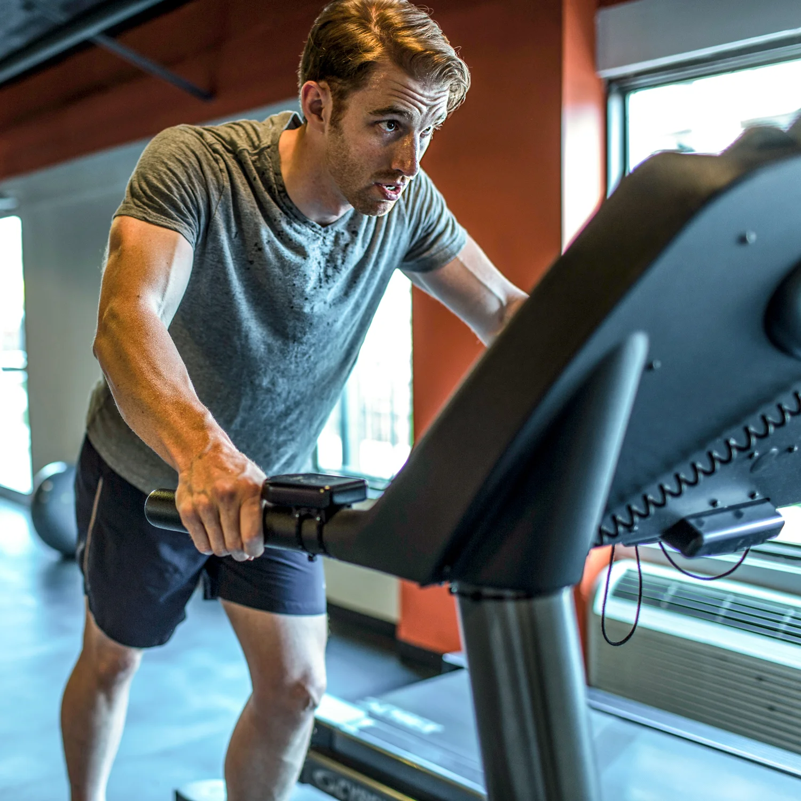
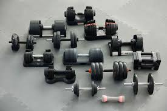
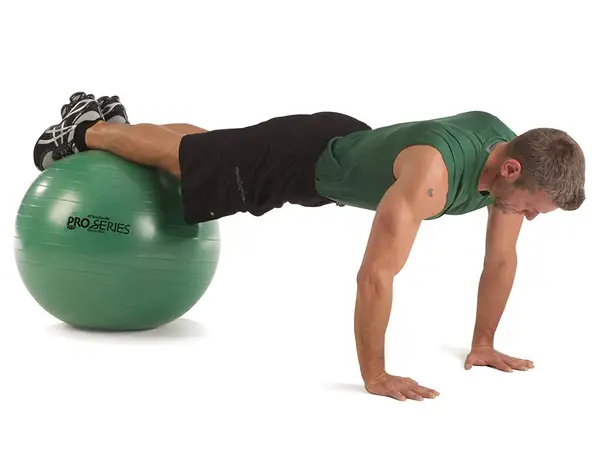
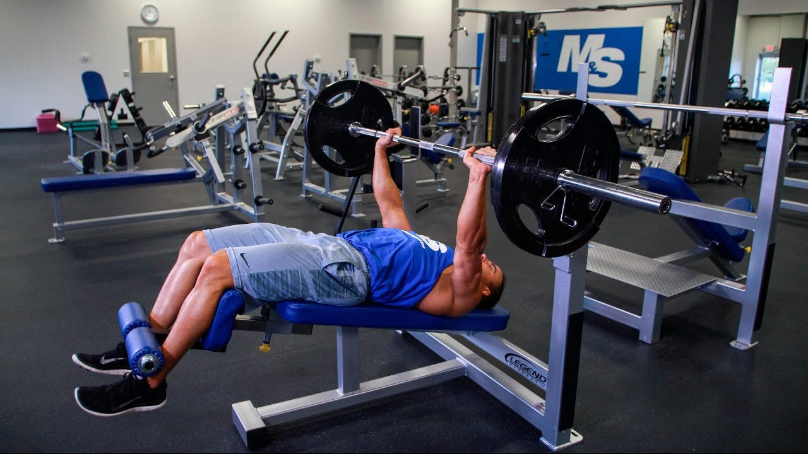

Let's get fit together

Equipments Available in our GYM
Treadmill
A treadmill is a device generally used for walking, running, or climbing while staying in the same place. Treadmills were introduced before the development of powered machines to harness the power of animals or humans to do work, often a type of mill operated by a person or animal treading the steps of a treadwheel to grind grain. In later times, treadmills were used as punishment devices for people sentenced to hard labor in prisons. The terms treadmill and treadwheel were used interchangeably for the power and punishment mechanisms. More recently, treadmills have instead been used as exercise machines for running or walking in one place. Rather than the user powering a mill, the device provides a moving platform with a wide conveyor belt driven by an electric motor or a flywheel. The belt moves to the rear, requiring the user to walk or run at a speed matching the belt. The rate at which the belt moves is the rate of walking or running. Thus, the speed of running may be controlled and measured. The more expensive, heavy-duty versions are motor-driven (usually by an electric motor). The simpler, lighter, and less expensive versions passively resist the motion, moving only when walkers push the belt with their feet. The latter are known as manual treadmills.
Dumbbells
The dumbbell, a type of free weight, is a piece of equipment used in weight training.It can be used individually or in pairs, with one in each hand. Adjustable dumbbells consist of a metal bar whose centre portion is often engraved with a crosshatch pattern (knurling) to improve grip. Weight plates are slid onto the outer portions of the dumbbell and secured with clips or collars. Shown to the right is a "spinlock" dumbbell, whose ends are threaded to accept large nuts as collars. Alternatively, a dumbbell may have smooth ends with plates being secured by a sprung collar. Plate-loaded (adjustable) dumbbells (a.k.a. loadable dumbbells) Spin-lock Spring collar clips Compression ring collar Ironmaster quick-lock
Excercise Ball
An exercise ball is a ball constructed of soft elastic, typically in 5 diameters of 10-centimeter increments, from 35 centimeters (14 inches) to 85 centimeters (34 inches), and filled with air. The air pressure is changed by removing a valve stem and either filling with air or letting the ball deflate. It is most often used in physical therapy, athletic training and exercise. It can also be used for weight training. The ball is also known by various other names, for instance: balance ball, birth ball, body ball, fitness ball, gym ball, gymnastic ball, physio ball, pilates ball, Pezzi ball, stability ball, Swedish ball, Swiss ball, therapy ball, or yoga ball.
Decline Bench Press
The bench press, or chest press, is an upper-body weight training exercise in which the trainee presses a weight upwards while lying on a weight training bench. The exercise uses the pectoralis major, the anterior deltoids, and the triceps, among other stabilizing muscles. A barbell is generally used to hold the weight, but a pair of dumbbells can also be used.[1] The barbell bench press is one of three lifts in the sport of powerlifting alongside the deadlift and squat, and is the only lift in the sport of Paralympic powerlifting. It is also used extensively in weight training, bodybuilding, and other types of training to develop the chest muscles. Bench press strength is important in combat sports as it tightly correlates to punching power. Bench press can also help contact athletes increase their performance because it can increase effective mass and functional hypertrophy of the upper body
